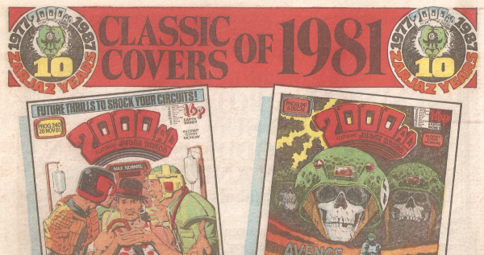

A short-lived poster series with a choice of classic covers from the previous decade.
Art by Brian Bolland & Dave Gibbons
| Title | Parts | Pages | w indicates a wraparound coverCovers | Year(s) | Issues | Writer | Artist | Colourist | Letterer |
|---|---|---|---|---|---|---|---|---|---|
| of 1977 | 1 | 1 | 0 | 1987 | 513 | n/a | reprints | <-- | n/a |
| of 1978 | 1 | 1 | 0 | 1987 | 514 | n/a | reprints | <-- | n/a |
| of 1979 | 1 | 2 | 0 | 1987 | 515 | n/a | reprints | <-- | n/a |
| of 1980 | 1 | 3 | 0 | 1987 | 516 | n/a | reprints | <-- | n/a |
| of 1981 | 1 | 4 | 0 | 1987 | 517 | n/a | reprints | <-- | n/a |
| of 1982 | 1 | 5 | 0 | 1987 | 518 | n/a | reprints | <-- | n/a |
| of 1983-86 | 1 | 6 | 0 | 1987 | 519 | n/a | reprints | <-- | n/a |
| year | episodes | pages |
| 1977 | 0 | 0 |
| 1978 | 0 | 0 |
| 1979 | 0 | 0 |
| 1980 | 0 | 0 |
| 1981 | 0 | 0 |
| 1982 | 0 | 0 |
| 1983 | 0 | 0 |
| 1984 | 0 | 0 |
| 1985 | 0 | 0 |
| 1986 | 0 | 0 |
| 1987 | 7 | 22 |
| 1988 | 0 | 0 |
| 1989 | 0 | 0 |
| 1990 | 0 | 0 |
| 1991 | 0 | 0 |
| 1992 | 0 | 0 |
| 1993 | 0 | 0 |
| 1994 | 0 | 0 |
| 1995 | 0 | 0 |
| 1996 | 0 | 0 |
| 1997 | 0 | 0 |